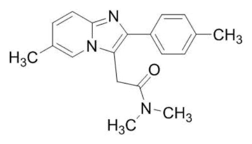
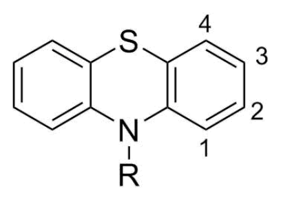
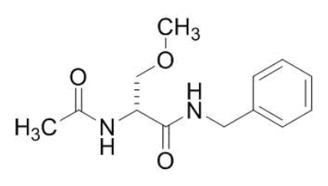
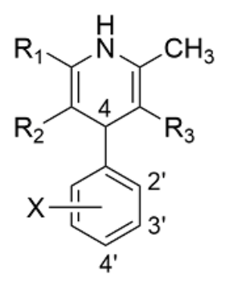
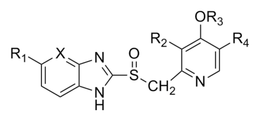

開卷有益 ／
藥師 ／ 藥理學與藥物化學 ／ 112 年第 2 次112 年第 2 次藥師藥理學與藥物化學試題與答案
這一頁是民國 112 年第 2 次藥師藥理學與藥物化學的整份歷屆試題，共 80 題，題目與標準答案出自考選部「國家考試試題及測驗式試題答案」開放資料，其中 58 題附有詳解。以下逐題列出題幹、選項與答案；要計時作答或記錄成績，請用線上練習。
考選部原始場次代碼：112100
線上作答這一科 →
全部 80 題
第 1 題
下列藥物中，何者最可能會抑制代謝該藥物本身的肝臟酵素，長期服用需注意調整劑量？
（A） carbamazepine（B） clopidogrel（C） phenytoin（D） rifampin答案：（B）
詳解與考點 正解：關鍵在長期用藥時對自身代謝酵素的抑制，而非自體誘導；clopidogrel 的代謝活化涉及 CYP2C19，且其代謝相關產物具有抑制相關肝臟酵素的交互作用特性，須留意長期治療時的藥物暴露與反應變化，故選 B。
A：carbamazepine 最具誘答性，因為它確實常在長期治療初期需要調整劑量；但原因是自體誘導代謝酵素，使清除增加，方向與自我代謝抑制相反。
C：phenytoin 的劑量調整常與飽和性代謝造成的非線性藥物動力學有關，並非本題所問的抑制自身代謝酵素。
D：rifampin 是強效肝臟酵素誘導劑，會加速許多藥物及自身的代謝，不是抑制。
本題考點：自體誘導與自體抑制（autoinduction and autoinhibition）——長期用藥需調整劑量時，先判斷代謝是被誘導而變快，還是被抑制而變慢；CYP2C19 藥物交互作用——遇到 clopidogrel 時，應留意其代謝活化與酵素交互作用對療效和暴露量的影響。
第 2 題
下列關於prodrug之敘述，何者最適當？
（A） 因有first-pass effect，口服吸收效果差（B） 在血中與白蛋白（albumin）結合度高（C） 在體內之代謝產物具有生物活性（D） 代謝物易由腎臟排出，半衰期短答案：（C）
詳解與考點 正解：prodrug 的設計重點是給予前驅物，進入體內後再經酵素或化學轉換形成具有藥理活性的產物；（C）正好描述此核心特徵，故選 C。
A：prodrug 常可藉由改變脂溶性、溶解度或運輸特性改善口服吸收，不能把 first-pass effect 與口服吸收差當成通則。
B：與 albumin 的結合度可能是某一藥物的個別性質，並非判定 prodrug 的條件。
D：代謝物是否容易由腎臟排出、半衰期是否短，取決於特定化學結構與清除路徑，不能定義 prodrug。
本題考點：前驅藥（prodrug）——判斷時看給藥形式本身是否需在體內轉化，且轉化產物是否產生活性；藥物設計目的——看到吸收、溶解度或選擇性等性質時，應視為可能的設計理由，不要誤當所有 prodrug 的必要特徵。
第 3 題
下列penicillin抗生素中，何者用於治療產生beta-lactamases之葡萄球菌感染（staphylococcal infection）時，不須 併用beta-lactamase inhibitor？
（A） amoxicillin（B） nafcillin（C） piperacillin（D） penicillin G答案：（B）
詳解與考點 正解：治療產生 beta-lactamase 的葡萄球菌時，要找本身可抗葡萄球菌 penicillinase 的 penicillin；nafcillin 的側鏈可降低 beta-lactamase 對 beta-lactam 環的破壞，因此不須另併 beta-lactamase inhibitor，故選 B。
A：amoxicillin 容易受 beta-lactamase 水解，面對產酶菌通常需搭配抑制劑才可恢復抗菌範圍。
C：piperacillin 雖有較廣的抗菌範圍，仍可能受 beta-lactamase 破壞；與 nafcillin 的差異在於它不是專為抗葡萄球菌 penicillinase 設計。
D：penicillin G 對產生 penicillinase 的葡萄球菌不穩定，不能單獨作為本題情境的治療選擇。
本題考點：抗葡萄球菌 penicillin（antistaphylococcal penicillin）——遇到產 penicillinase 的葡萄球菌時，選本身耐酶的 nafcillin 類藥物；beta-lactamase inhibitor——一般 beta-lactam 容易被水解時才考慮併用，耐酶側鏈與外加抑制劑是兩種不同解法。
第 4 題
下列抗生素中，何者不是經由抑制細菌細胞壁合成，來達到其抗菌效果？
（A） dalbavancin（B） ceftriaxone（C） meropenem（D） linezolid答案：（D）
詳解與考點 正解：題目要求找出不靠抑制細菌細胞壁合成的抗生素；linezolid 結合細菌 50S 核糖體次單元並抑制蛋白質合成，作用標的不是細胞壁，故選 D。
A：dalbavancin 為 glycopeptide 類，干擾肽聚醣前驅物的細胞壁合成。
B：ceftriaxone 為 cephalosporin 類，藉由結合 penicillin-binding proteins 抑制肽聚醣交聯。
C：meropenem 為 carbapenem 類 beta-lactam，亦以 penicillin-binding proteins 為標的阻斷細胞壁合成。
本題考點：蛋白質合成抑制劑（protein synthesis inhibitor）——看到 linezolid 時，直接連結 50S 核糖體而非細胞壁；beta-lactam 與 glycopeptide——兩類藥物的作用位置不同，但都會干擾細菌肽聚醣細胞壁的形成。
第 5 題
下列抗生素中，何者無法用於治療methicillin-resistant staphylococcus aureus（MRSA）之感染？
（A） vancomycin（B） dalbavancin（C） ceftaroline（D） aztreonam答案：（D）
詳解與考點 正解：MRSA 的關鍵抗藥機轉是改變的 PBP2a 使多數 beta-lactam 難以有效結合；aztreonam 主要針對需氧革蘭陰性菌，缺乏治療 MRSA 的有效抗菌範圍，故選 D。
A：vancomycin 為治療 MRSA 的代表性 glycopeptide，藉由干擾細胞壁合成發揮作用。
B：dalbavancin 同屬 glycopeptide 類，對革蘭陽性菌包括 MRSA 具活性。
C：ceftaroline 可有效結合 PBP2a，是少數對 MRSA 具活性的 cephalosporin。
本題考點：MRSA 治療（MRSA treatment）——先辨認 PBP2a 造成多數 beta-lactam 失效，再選能避開此抗藥性或直接作用於細胞壁的藥物；aztreonam——看到單環 beta-lactam 時，應連結其需氧革蘭陰性菌範圍，不要誤用於 MRSA。
第 6 題
下列抗生素中，何者脂溶性最大且最容易通過中樞血腦屏障（blood brain barrier），可用於治療meningitis？
（A） tetracycline（B） amikacin（C） azithromycin（D） cefepime答案：（D）
第 7 題
下列抗生素中，何者抗菌機轉不是抑制細菌之蛋白質合成，以達到bacteriostatic或bactericidal effects？
（A） quinupristin-dalfopristin（B） tedizolid（C） tigecycline（D） fosfomycin答案：（D）
詳解與考點 正解：題目要排除不是抑制細菌蛋白質合成的藥物；fosfomycin 抑制 MurA，阻斷肽聚醣合成的早期步驟，作用於細胞壁而非核糖體，故選 D。
A：quinupristin-dalfopristin 作用於 50S 核糖體，抑制蛋白質合成。
B：tedizolid 為 oxazolidinone 類，與 50S 核糖體相關部位結合而阻斷蛋白質合成起始。
C：tigecycline 為 tetracycline 類衍生物，結合 30S 核糖體並抑制蛋白質合成。
本題考點：fosfomycin（MurA inhibitor）——看到 fosfomycin 時，判定為抑制肽聚醣前驅物形成的細胞壁藥；核糖體抗生素——50S 與 30S 抑制劑都屬蛋白質合成抑制，但需再依次單元區分藥物類別。
第 8 題
下列抗黴菌藥物中，何者可抑制黴菌之細胞壁合成？
（A） amphotericin B（B） fluconazole（C） micafungin（D） flucytosine答案：（C）
詳解與考點 正解：黴菌細胞壁的特有結構是 beta-1,3-D-glucan；micafungin 為 echinocandin，抑制 beta-1,3-D-glucan synthase，因而直接阻斷黴菌細胞壁合成，故選 C。
A：amphotericin B 結合細胞膜上的 ergosterol 形成孔洞，破壞的是細胞膜。
B：fluconazole 抑制 ergosterol 生合成路徑中的酵素，主要影響黴菌細胞膜組成。
D：flucytosine 進入黴菌後干擾核酸合成，作用標的不是細胞壁。
本題考點：echinocandin（beta-1,3-D-glucan synthase inhibitor）——看到 micafungin 時，直接連結黴菌細胞壁合成抑制；抗黴菌藥作用位置——ergosterol 相關藥物管細胞膜，flucytosine 管核酸，只有 echinocandin 類管細胞壁。
第 9 題
有關降血脂藥物niacin之作用機制與副作用，下列敘述何者錯誤？
（A） 能降低三酸甘油脂（triglycerides）、LDL及Lp(a)（B） 能促進HDL分解代謝（C） 能抑制肝臟分泌VLDL，進而減少LDL產生（D） 可能會增加血中尿酸濃度答案：（B）
詳解與考點 正解：niacin 對 HDL 的作用是減少 HDL 中 apoA-I 的分解代謝，使 HDL 濃度上升；（B）說它促進 HDL 分解代謝，方向正好相反，故選 B。
A：niacin 可降低 triglycerides、LDL 與 Lp(a)，是其脂質譜效應的一部分。
C：niacin 抑制肝臟分泌 VLDL，因 LDL 有一部分由 VLDL 代謝而來，LDL 產生也隨之減少，敘述正確。
D：niacin 可能使血中尿酸濃度上升，使用時須留意高尿酸血症或痛風相關風險。
本題考點：niacin 脂質作用（niacin lipid effects）——判斷 HDL 時記住 niacin 減少 apoA-I 分解、使 HDL 上升；niacin 不良反應——看到尿酸上升時，應連結高尿酸血症與痛風風險，並與脂質改善效果分開判讀。
第 10 題
下列何者為pentostatin用以預防同種異體移植排斥（allograft rejection）的藥理機制？
（A） 抑制dihydroorotate dehydrogenase（B） 抑制adenosine deaminase（C） 抑制JAK enzymes（D） 抑制sphingosine-1-phosphate (S1P) receptor答案：（B）
詳解與考點 正解：pentostatin 用於抑制移植排斥時，關鍵是阻斷淋巴球嘌呤代謝所需的 adenosine deaminase。adenosine deaminase 受抑後，具毒性的去氧腺苷代謝物累積，會抑制淋巴球增生，故（B）正確，故選 B。
A：抑制 dihydroorotate dehydrogenase 是抑制嘧啶新生合成的機轉，代表藥如 leflunomide，並非 pentostatin 的作用位置。
C：抑制 JAK enzymes 是阻斷 cytokine 訊號傳遞的標靶治療機轉，與（B）抑制 adenosine deaminase 的嘌呤代謝干擾不同。
D：抑制 sphingosine-1-phosphate（S1P）receptor 會使淋巴球滯留於淋巴結；這是調控淋巴球移行的作法，不是 pentostatin 的酵素抑制機轉。
本題考點：adenosine deaminase inhibition——看到 pentostatin 時，判斷重點是抑制 purine metabolism 而使淋巴球增生受阻；移植免疫抑制（transplant immunosuppression）——先分清藥物是阻斷核酸合成、細胞激素訊號，還是淋巴球移行，再配對靶點。
第 11 題
下列藥物中，何者與warfarin併用會增加抗凝血作用？
（A） amiodarone（B） cholestyramine（C） primidone（D） rifampin答案：（A）
詳解與考點 正解：warfarin 的抗凝血效果會在代謝受抑時增強。amiodarone 可抑制 warfarin 的肝臟代謝，使 warfarin 暴露量上升、抗凝血作用增加，故（A）正確，故選 A。
B：cholestyramine 會在腸道結合多種藥物而降低其吸收；與 warfarin 併用時較可能削弱而非增強抗凝血作用。
C：primidone 及其代謝相關作用可誘導肝臟藥物代謝，會加快 warfarin 清除，方向與增加抗凝血作用相反。
D：rifampin 是強效藥物代謝酵素誘導劑，會降低 warfarin 濃度。它看似也是常見交互作用藥物，但分辨關鍵在酵素誘導會使抗凝血效果下降。
本題考點：warfarin drug interaction——遇到併用藥時先判斷它是代謝抑制劑或誘導劑，前者通常使 INR 上升、後者通常使 INR 下降；amiodarone——若與代謝受限的藥物併用，應優先想到其提高受質藥物暴露量的交互作用。
第 12 題
下列藥物中，何者最適宜用於治療甲狀腺功能不足（hypothyroidism）？
（A） propranolol（B） levothyroxine（C） somatropin（D） methimazole答案：（B）
詳解與考點 正解：hypothyroidism 的病因是甲狀腺素不足，治療要直接補回 thyroid hormone。levothyroxine 為合成 T4，可作為甲狀腺素替代治療，故（B）正確，故選 B。
A：propranolol 可減輕心悸、顫抖等交感神經症狀，常用於甲狀腺功能亢進的症狀控制，不能補足缺乏的 thyroid hormone。
C：somatropin 是 recombinant growth hormone，用於生長激素缺乏等狀況，與甲狀腺素替代無關。
D：methimazole 抑制 thyroid hormone 合成，適用於 hyperthyroidism；若用在 hypothyroidism，會使荷爾蒙不足更嚴重。
本題考點：甲狀腺功能不足（hypothyroidism）——看到荷爾蒙缺乏時，以替代治療為優先判準；levothyroxine——藥名辨識到 T4 replacement 時，排除只控制症狀或抑制甲狀腺素合成的藥物。
第 13 題
下列何者不是dexamethasone的藥理作用？
（A） 抑制免疫反應（immunosuppression）（B） 增加糖質新生（gluconeogenesis）（C） 降低肝醣合成（glycogen synthesis）（D） 增加鈉離子再吸收（Na+ reabsorption）答案：（C）
第 14 題
下列藥物中，何者為治療Paget disease的第一線用藥？
（A） tiludronate（B） cinacalcet（C） raloxifene（D） ibuprofen答案：（A）
詳解與考點 正解：Paget disease 的病理核心是骨重塑過度，治療要抑制 osteoclast-mediated bone resorption。在選項中，tiludronate 是 bisphosphonate，可抑制骨吸收，故（A）正確，故選 A。
B：cinacalcet 是 calcium-sensing receptor 的調節藥，主要用來降低副甲狀腺素相關的高血鈣問題，不是直接抑制 Paget disease 異常骨重塑的第一線類別。
C：raloxifene 是 selective estrogen receptor modulator，可用於特定骨質疏鬆情境；它不是 Paget disease 的標準抗骨吸收首選藥物。
D：ibuprofen 為 NSAID，可緩解疼痛與發炎，但不能矯正 Paget disease 的異常骨重塑。它看似能改善症狀，分辨關鍵仍在是否直接抑制骨吸收。
本題考點：Paget disease——看到局部骨重塑過度時，優先選擇直接抑制 osteoclast 的藥物；bisphosphonate——若題目考疾病修飾而非止痛，辨識其抑制骨吸收的角色。
第 15 題
下列何者是黏液水腫昏迷（myxedema coma）病人最適合之治療用藥？
（A） amiodarone（B） insulin（C） levothyroxine（D） methimazole答案：（C）
詳解與考點 正解：myxedema coma 是嚴重 hypothyroidism 的失代償狀態，選項中的治療方向應是儘速補充 thyroid hormone。levothyroxine 可提供 T4 進行甲狀腺素替代，故（C）正確，故選 C。
A：amiodarone 是 antiarrhythmic drug，且可造成甲狀腺功能異常，並非補充 thyroid hormone 的治療。
B：insulin 用於胰島素缺乏或高血糖相關處置，不能矯正 myxedema coma 的甲狀腺素不足。
D：methimazole 抑制甲狀腺素合成，適用於 hyperthyroidism；用於此處會使既有的 hypothyroidism 更惡化。
本題考點：黏液水腫昏迷（myxedema coma）——遇到嚴重 hypothyroidism 的急症時，先辨識核心處置為 thyroid hormone replacement；甲狀腺藥物方向——補充 levothyroxine 與抑制甲狀腺素合成的 methimazole 作用方向相反。
第 16 題
下列何者不是長期使用amiodarone可能產生之副作用？
（A） 心搏過速（B） 甲狀腺功能低下（C） 肺部纖維化（D） 肝功能異常答案：（A）
詳解與考點 正解：題目問的是長期 amiodarone 副作用中何者不會出現。amiodarone 可抑制心臟傳導並造成 sinus bradycardia；（A）心搏過速與典型的心率方向相反，故選 A。
B：amiodarone 的高碘含量與對甲狀腺的影響可造成 hypothyroidism，屬長期使用需留意的不良反應，故不是答案。
C：肺部纖維化是 amiodarone 的重要長期肺毒性，出現新的呼吸症狀時需列入鑑別，故不是答案。
D：肝功能異常可在 amiodarone 治療期間發生，屬其器官毒性監測重點，故不是答案。
本題考點：amiodarone adverse effects——遇到長期用藥題時，從心臟、甲狀腺、肺與肝逐項檢核；抗心律不整藥的心率效應——若藥物抑制自動性或傳導，優先排除與 bradycardia 方向相反的敘述。
第 17 題
下列抗心律不整藥物中，何者可直接作用在SA node之離子通道，而抑制心跳速率？
（A） ranolazine，抑制INa（B） ivabradine，抑制funny current If（C） vernakalant，抑制ICa（D） adenosine，抑制IK答案：（B）
詳解與考點 正解：SA node 的自發去極化仰賴 funny current If。ivabradine 直接抑制 If，降低 phase 4 去極化斜率，因此能選擇性降低心跳速率，故（B）正確，故選 B。
A：ranolazine 主要抑制 late INa，以減少心肌細胞內鈉與鈣負荷；它不是直接抑制 SA node funny current 的減心率藥物。
C：vernakalant 的作用重點在心房選擇性的鈉、鉀離子電流調節，並非直接封鎖 SA node 的 If 來抑制自動性。
D：adenosine 可活化鉀離子電流並抑制 AV node 傳導；（D）寫成抑制 IK，離子通道方向即不正確。
本題考點：funny current If——看到 SA node 自動性與選擇性降心率時，配對 ivabradine 的 If inhibition；節律點與房室結（SA node versus AV node）——區分藥物是降低節律點自動性，還是主要抑制 AV nodal conduction。
第 18 題
β-blockers用於治療心律不整之機制，下列何者正確？
（A） 延長AV conduction time及有效不反應期（B） 降低鈉離子通道活化閾值，增加同步興奮性（C） 活化鉀離子通道，增加AV node再極化程度（D） 抑制交感興奮，縮短動作電位有效不反應期答案：（A）
詳解與考點 正解：β-blockers 阻斷 β-adrenergic stimulation 後，AV node 的 cAMP 下降、傳導變慢，且有效不反應期延長。因此（A）延長 AV conduction time 及有效不反應期符合其抗心律不整作用，故選 A。
B：降低鈉離子通道活化閾值會使細胞更容易興奮；β-blockers 的主要抗心律不整作用是降低交感驅動與自動性，不是提高同步興奮性。
C：β-blockers 不以直接活化鉀離子通道作為主要機轉。它們對 AV node 的作用應從 β 受體阻斷與 cAMP 下降判斷。
D：抑制交感興奮會延長而非縮短 AV node 的有效不反應期；不反應期方向是本題最強的誘答分界。
本題考點：Class II antiarrhythmic drugs——判斷 β-blockers 時，連結 β blockade、cAMP 下降與 AV nodal conduction 變慢；有效不反應期（effective refractory period）——遇到抑制結節組織的敘述時，判斷方向應是延長而非縮短。
第 19 題
鈣離子管道阻斷劑、β-blockers或nitrates用於治療心絞痛時，對心臟產生的作用，何者錯誤？
（A） nitrates可能會引起反射性心搏過速（reflex tachycardia）（B） 鈣離子管道阻斷劑會增加心室舒張末期容積（ventricular end-diastolic volume）（C） β-blockers會延長心室射血時間（ventricular ejection time）（D） nitrates會減少後負荷（afterload），增加心室射血時間（ventricular ejection time）答案：（D）
詳解與考點 正解：本題要找整體血流動力學方向錯誤的敘述。nitrates 可降低靜脈回流，並在有系統性血管作用時降低 afterload；心室在較低阻力下射血，不應由此推論 ventricular ejection time 增加。（D）把降低 afterload 與增加射血時間併列，後半段不正確，故選 D。
A：nitrates 引起血管舒張與血壓下降時，可出現 reflex tachycardia，故此項正確而非答案。
B：以本題的血流動力學脈絡，鈣離子管道阻斷劑的負性肌力作用可使 ventricular end-diastolic volume 增加，故此項不是答案。
C：β-blockers 降低心率與心肌收縮相關作用，可使 ventricular ejection time 延長；這與（D）由降低 afterload 推得增加射血時間的因果不同。
本題考點：nitrates 的血流動力學（nitrate hemodynamics）——遇到 venodilation 時先判斷 preload 降低，並把 afterload 降低與心室射血阻力下降連結；抗心絞痛藥的作用方向——比較各類藥物時，將心率、收縮力、preload、afterload 與射血時間分開判讀。
第 20 題
有關保鉀型利尿劑amiloride於腎小管中之作用機制，下列敘述何者正確？
（A） 抑制遠曲小管（distal convoluted tubule）中Na+/Cl- cotransporter（B） 抑制近曲小管（proximal convoluted tubule）中aldosterone receptor（C） 抑制集尿管（collecting duct）中Na+ channel（D） 抑制亨利氏環（loop of Henle）中Na+/K+/2Cl- cotransporter答案：（C）
詳解與考點 正解：amiloride 是保鉀型利尿劑，直接阻斷集尿管主細胞的 epithelial Na+ channel。鈉進入細胞減少後，驅動鉀分泌的電位差也下降，因此可保留鉀離子；（C）正確，故選 C。
A：遠曲小管的 Na+/Cl- cotransporter 是 thiazide diuretics 的作用位置，不是 amiloride 的靶點。
B：aldosterone receptor 位於集尿管相關細胞，抑制此受體的是 spironolactone 或 eplerenone；amiloride 不經由 aldosterone receptor 作用。
D：亨利氏環粗上行支的 Na+/K+/2Cl- cotransporter 是 loop diuretics 的作用位置，與 amiloride 阻斷 Na+ channel 不同。
本題考點：amiloride——看到保鉀型利尿劑時，判斷是否直接抑制 collecting duct 的 epithelial Na+ channel；利尿劑作用部位——以 transporter 或 receptor 對照腎元節段，可區分 thiazide、loop diuretics 與 potassium-sparing diuretics。
第 21 題
關於hydralazine應用於治療嚴重高血壓及妊娠高血壓之敘述，下列何者正確？
（A） 對缺血性心臟病高血壓病人，不會產生心絞痛或心律不整（B） 不需經由肝臟代謝成有效成分，無首渡效應，高生物可用率（C） 經由減少cGMP及cAMP代謝，產生血管舒張作用（D） 主要對小動脈（arterioles）而非對靜脈，產生血管舒張作用答案：（D）
詳解與考點 正解：hydralazine 是直接作用於血管平滑肌的 vasodilator，選擇性較偏向小動脈，因而降低 peripheral resistance 與 afterload。它對靜脈的舒張作用較小，故（D）正確，故選 D。
A：hydralazine 的小動脈擴張可引起 reflex tachycardia，並可能加重缺血性心臟病的心絞痛或誘發心律不整；（A）把此風險寫成不會發生，故錯。
B：hydralazine 經肝臟代謝且有首渡效應，口服生物可用率可受代謝差異影響；（B）所述無首渡效應與高生物可用率不正確。
C：減少 cGMP 及 cAMP 代謝是 phosphodiesterase inhibition 的描述，不是 hydralazine 的主要血管舒張機轉。
本題考點：hydralazine——判斷其血管選擇性時，記住以 arteriolar dilation 為主、降低 afterload；直接血管擴張劑（direct vasodilators）——若小動脈擴張造成血壓下降，要連結 reflex sympathetic activation 與心絞痛風險。
第 22 題
服用digoxin之心衰竭患者，若需使用利尿劑以改善水腫，則下列何者最不會增加digoxin之毒性？
（A） bumetanide（B） dichlorphenamide（C） metolazone（D） spironolactone答案：（D）
詳解與考點 正解：digoxin 毒性會因 hypokalemia 而增加，因低血鉀會提高 digoxin 與 Na+/K+-ATPase 的結合傾向。spironolactone 為 aldosterone antagonist，可保留鉀離子，因此在選項中最不會經由低血鉀增加 digoxin 毒性，故（D）正確，故選 D。
A：bumetanide 為 loop diuretic，可能造成鉀離子流失；（A）因此會增加低血鉀相關的 digoxin 毒性風險。
B：dichlorphenamide 為 carbonic anhydrase inhibitor，可增加腎臟鉀離子流失；與 digoxin 併用時不利於維持鉀離子平衡。
C：metolazone 為具排鉀風險的利尿劑，可能使 hypokalemia 加重，故較可能提高 digoxin 毒性。
本題考點：digoxin toxicity——遇到利尿劑併用時，優先檢查 potassium balance，hypokalemia 會提高毒性風險；potassium-sparing diuretics——若題目問相對不會由排鉀加重 digoxin 毒性的藥物，辨識 aldosterone antagonist 或 ENaC blocker。
第 23 題
下列藥物中，何者可抑制副交感神經元進行胞吐作用（exocytosis），減少乙醯膽鹼（acetylcholine）之釋出？
（A） cocaine（B） botulinum toxin（C） reserpine（D） vesamicol答案：（B）
詳解與考點 正解：抑制乙醯膽鹼釋出的關鍵是阻斷囊泡與神經末梢膜融合。botulinum toxin 破壞 SNARE proteins，使含 acetylcholine 的囊泡無法進行 exocytosis，故（B）正確，故選 B。
A：cocaine 主要阻斷單胺類神經傳遞物質的再攝取，增強交感神經傳遞；它不會抑制副交感神經末梢的 acetylcholine 囊泡胞吐。
C：reserpine 抑制 vesicular monoamine transporter，使 adrenergic neuron 的單胺類神經傳遞物質耗竭；作用對象不是 acetylcholine 的 exocytosis。
D：vesamicol 抑制 vesicular acetylcholine transporter，會妨礙 acetylcholine 裝入囊泡，但不是直接抑制既有囊泡與膜融合的 exocytosis。兩者都會減弱傳遞，差異在作用於裝載還是釋放步驟。
本題考點：botulinum toxin——題幹出現 acetylcholine release 與 exocytosis 時，配對 SNARE-mediated vesicle fusion 被抑制；膽鹼性神經末梢（cholinergic nerve terminal）——依序分辨合成、囊泡裝載與胞吐釋放，避免把相鄰步驟混為同一機轉。
第 24 題
下列何者不是毒蕈鹼受體拮抗劑（muscarinic antagonist）之治療用途？
（A） 阿茲海默症（Alzheimer disease）（B） 帕金森氏症（Parkinson disease）（C） 動暈症（motion sickness）（D） 慢性阻塞性肺病（chronic obstructive pulmonary disease）答案：（A）
詳解與考點 正解：Alzheimer disease 的認知症狀治療需維持或增加 cholinergic transmission，而 muscarinic antagonists 會阻斷 acetylcholine 的受體作用。（A）不是這類藥的治療用途，故選 A。
B：中樞 muscarinic antagonists 可用於 Parkinson disease 的部分症狀，以調整 basal ganglia 中 dopamine 與 acetylcholine 的相對作用，故不是答案。
C：scopolamine 等 muscarinic antagonists 可預防 motion sickness，故（C）是其治療用途。
D：吸入型 muscarinic antagonists 可使呼吸道平滑肌舒張，用於 chronic obstructive pulmonary disease 的支氣管擴張，故不是答案。
本題考點：muscarinic antagonists——若疾病治療需要增強 cholinergic transmission，如 Alzheimer disease，便排除抗 muscarinic 藥物；器官選擇性——分別以中樞、前庭與呼吸道的 M receptor 作用判斷 Parkinson disease、motion sickness 與 COPD 的用途。
第 25 題
下列毒蕈鹼受體拮抗劑（muscarinic antagonists）中，何者對於眼睛產生散瞳作用（mydriasis）最長久？
（A） tropicamide（B） scopolamine（C） homatropine（D） cyclopentolate答案：（B）
詳解與考點 正解：這題比較的是散瞳持續時間，不是所有藥物是否都能散瞳。在列出的 muscarinic antagonists 中，scopolamine 對眼睛的 cycloplegia 與 mydriasis 作用最持久，故（B）正確，故選 B。
A：tropicamide 起效快、恢復也快，常用於需要短暫散瞳的眼科檢查，持續時間較短。
C：homatropine 可造成散瞳，但作用持續時間短於 scopolamine；兩者都屬 antimuscarinic，分辨關鍵在眼部作用的時程。
D：cyclopentolate 的散瞳與調節麻痺作用亦非最持久，故不能選作本題答案。
本題考點：散瞳藥時程（mydriatic duration）——遇到同屬 muscarinic antagonist 的比較題時，先比持續時間而非只比是否造成 mydriasis；scopolamine——若題幹限定四種眼用 antimuscarinic 的最長效者，辨識其較持久的眼部作用。
第 26 題
關於氫離子幫浦抑制劑（proton pump inhibitors）的敘述，下列何者錯誤？
（A） 氫離子幫浦抑制劑常為前驅藥（prodrug）（B） 氫離子幫浦抑制劑半衰期很長（t1/2超過8小時）（C） 食物會降低氫離子幫浦抑制劑的生物可用率（bioavailability）（D） 餐前60分鐘服用最適合答案：（B）
詳解與考點 正解：proton pump inhibitors 的抑酸效果持久，是因為活化後不可逆抑制 gastric H+/K+-ATPase，不是因為血中半衰期很長。其 plasma t½ 並不超過 8 小時，因此（B）錯誤，故選 B。
A：proton pump inhibitors 多以 prodrug 形式到達胃壁細胞的酸性分泌小管後才活化，故（A）正確而非答案。
C：食物可降低 proton pump inhibitors 的生物可用率或影響吸收時機，所以通常安排在進食前服用；（C）的方向正確。
D：餐前約 60 分鐘服用可使藥物吸收與餐後 proton pump 活化配合，故（D）不是答案。
本題考點：proton pump inhibitors——看到長效抑酸時，要分開 plasma t½ 與不可逆 enzyme inhibition 的作用持續時間；PPI 給藥時機——需要抑制活化中的 gastric H+/K+-ATPase 時，安排在餐前服用。
第 27 題
關於sucralfate的敘述，下列何者正確？
（A） 主要作用機制是抑制胃酸分泌（B） 腹瀉是常見的副作用（C） 與氫離子幫浦抑制劑（proton pump inhibitors）合用可增强其作用（D） 應該在空腹時使用答案：（D）
詳解與考點 正解：sucralfate 需在胃內酸性環境形成黏附性保護層，覆蓋潰瘍表面，因此應在空腹時使用以利接觸病灶。（D）正確，故選 D。
A：sucralfate 的主要作用是形成局部黏膜保護屏障，不是抑制胃酸分泌；抑制胃酸的機轉屬於 proton pump inhibitors 或 H2 receptor antagonists。
B：sucralfate 較常見的腸胃道副作用是 constipation，不是（B）所述腹瀉。
C：sucralfate 的保護層形成需要酸性環境；proton pump inhibitors 降低胃酸後，並不會增強其作用。它看似同為潰瘍用藥，但作用條件正好不同。
本題考點：sucralfate——若題幹考局部黏膜保護，辨識其在酸性環境聚合並覆蓋潰瘍的機轉；潰瘍藥物併用——比較藥物時，同為抗潰瘍用途不代表作用可相加，還要檢查是否依賴胃酸。
第 28 題
關於選擇性第二型環氧酶（cyclooxygenase-2）抑制劑之敘述，下列何者錯誤？
（A） 不易產生胃潰瘍（B） 仍具有腎毒性的副作用（C） celecoxib受CYP2C9代謝（D） 不易引起血管栓塞的風險答案：（D）
詳解與考點 正解：選擇性 COX-2 inhibitors 保留血小板 COX-1 衍生的 thromboxane A2，卻降低血管內皮 COX-2 衍生的 prostacyclin；此失衡會提高血管栓塞風險。因此（D）「不易引起血管栓塞」錯誤，故選 D。
A：相較於同等抑制 COX-1 的 NSAIDs，選擇性 COX-2 inhibitors 較不易破壞胃黏膜保護，胃潰瘍風險相對較低，故不是答案。
B：腎臟的 prostaglandin 調節仍受 COX-2 影響，所以選擇性 COX-2 inhibitors 仍可能產生腎毒性；胃毒性較低不等於腎毒性消失。
C：celecoxib 可經 CYP2C9 代謝，故（C）正確而非答案。
本題考點：選擇性 COX-2 inhibition——比較毒性時，記住胃腸道風險相對下降但腎毒性仍存在；prostacyclin-thromboxane balance——若血管 prostacyclin 降低而血小板 thromboxane A2 相對保留，判斷方向為 thrombosis risk 上升。
第 29 題
下列治療類風濕關節炎藥物中，何者為直接抑制T淋巴細胞活化之蛋白藥物？
（A） abatacept（B） tocilizumab（C） adalimumab（D） etanercept答案：（A）
詳解與考點 正解：T lymphocyte activation 需 CD28 與 CD80/86 的共刺激訊號。abatacept 是 CTLA-4-Ig，可結合 antigen-presenting cell 的 CD80/86，阻斷 T cell 共刺激，故（A）正確，故選 A。
B：tocilizumab 為 anti-IL-6 receptor antibody，阻斷 IL-6 訊號，不是 CD80/86 共刺激路徑。
C：adalimumab 為 anti-TNF-α monoclonal antibody，降低 TNF-α 驅動的發炎，標靶不同。
D：etanercept 為 soluble TNF receptor fusion protein，捕捉 TNF；它同樣治療 rheumatoid arthritis，但不阻斷 CD28 共刺激。分辨關鍵在 TNF 與 CD80/86 的作用位置。
本題考點：abatacept——看到 T lymphocyte co-stimulation 時，配對 CTLA-4-Ig 結合 CD80/86、阻斷 CD28 訊號；生物製劑標靶（biologic DMARD targets）——依 IL-6 receptor、TNF 與 T cell co-stimulation 區分 rheumatoid arthritis 生物製劑。
第 30 題
下列中樞神經性疾病和治療藥物之配對，何者錯誤？
（A） benztropine因拮抗muscarinic受體，可以治療帕金森氏症（Parkinson disease）（B） tetrabenazine因減少dopamine濃度，可以治療亨汀頓氏舞蹈症（Huntington disease）（C） metoprolol是β1 adrenergic antagonist，可以治療顫抖（tremor）（D） donepezil抑制cholinesterase，可以治療阿茲海默症（Alzheimer disease）答案：（C）
第 31 題
阿珍已經懷孕四個月，但是她卻患了廣泛性焦慮症，根據美國FDA懷孕用藥指示，下列何種鎮靜安眠藥物最 安全？
（A） buspirone（B） diazepam（C） pentobarbital（D） triazolam答案：（A）
詳解與考點 正解：本題以懷孕與廣泛性焦慮症為條件，並明示採舊式美國 FDA 懷孕用藥分類；（A）buspirone 為 5-HT1A partial agonist，適用於廣泛性焦慮症，在這組選項中胎兒風險的比較最有利。它不是以 GABA-A 受體鎮靜為主的 benzodiazepine，故選 A。
B：diazepam 為 benzodiazepine，會通過胎盤；妊娠期間的胎兒暴露及接近分娩時的新生兒鎮靜、戒斷風險，使其不符合題目所問的最安全選擇。
C：pentobarbital 為 barbiturate，會造成中樞神經抑制並可通過胎盤；相較於（A）buspirone，並非本題條件下較低風險的焦慮治療選項。
D：triazolam 也是 benzodiazepine，短效並不等於沒有胎兒與新生兒暴露風險；其適應症也以失眠為主，不如（A）直接對應廣泛性焦慮症。
本題考點：懷孕用藥風險分級（pregnancy risk classification）——題目明示採舊式美國 FDA 分類時，需在該分類架構內比較，不能與現行敘述式標示混用；buspirone 的作用機轉（5-HT1A partial agonism）——廣泛性焦慮症的長期控制可辨識其非 benzodiazepine 的 serotonergic 機轉。
第 32 題
有關carbidopa的敘述，下列何者正確？
（A） 會通透血腦障壁（blood-brain barrier）（B） 會抑制單胺氧化酶B（MAO-B）的活性，進而減少dopamine的代謝作用（C） 會減少levodopa在周邊系統的代謝作用（D） 經常單獨使用來治療帕金森氏症的患者答案：（C）
詳解與考點 正解：關鍵在 carbidopa 是周邊 aromatic L-amino acid decarboxylase inhibitor。它抑制 levodopa 在周邊轉換成 dopamine，因而使較多 levodopa 可到達中樞，並減少周邊 dopamine 所致的不良反應；（C）正確，故選 C。
A：carbidopa 無法通過 blood-brain barrier，正因其作用限於周邊，才不會直接妨礙腦內 levodopa 轉為 dopamine。
B：抑制 MAO-B 以減少 dopamine 代謝是 selegiline、rasagiline 等藥物的機轉，不是（B）carbidopa 的作用位置。
D：carbidopa 本身不能補充或增加腦內 dopamine，單獨使用沒有足夠的抗帕金森氏症效果；臨床上須與 levodopa 併用。
本題考點：周邊芳香族 L-胺基酸脫羧酶抑制（peripheral aromatic L-amino acid decarboxylase inhibition）——與 levodopa 併用時，看它是否減少周邊代謝而非直接產生 dopamine；血腦障壁（blood-brain barrier）——不能進入中樞的輔助藥，仍可藉由改變周邊代謝提高前驅物進腦量。
第 33 題
下列那一種抗癲癇藥物，為治療癲癇重積症（status epilepticus）的第一線用藥？
（A） diazepam（B） ethosuximide（C） carbamazepine（D） valproic acid答案：（A）
詳解與考點 正解：癲癇重積症的初始目標是迅速終止持續發作；（A）diazepam 為 benzodiazepine，可增強 GABA-A receptor 抑制性傳遞，適合用於急性止痙。在所列選項中，它是第一線用藥，故選 A。
B：ethosuximide 主要抑制 thalamic T-type calcium channel，用於失神發作的長期控制，起效定位不符合急性終止癲癇重積症的需求。
C：carbamazepine 適合部分性發作等維持治療，但不是癲癇重積症急性處置時先用來快速止痙的藥物。
D：valproic acid 為廣效抗癲癇藥，急性處置中可在 benzodiazepine 後作為後續選項之一；但其角色不是本題所問的初始第一線止痙。
本題考點：癲癇重積症初始處置（initial treatment of status epilepticus）——先選起效快、可迅速增強 GABA-A 抑制的 benzodiazepine；抗癲癇藥的急慢性分工（acute versus maintenance antiseizure therapy）——長期控制有效不代表能取代急性止痙第一線。
第 34 題
下列那一種吸入性全身麻醉劑的溶解度（血液/氣體分配係數）最低？
（A） halothane（B） enflurane（C） isoflurane（D） desflurane答案：（D）
詳解與考點 正解：判準是血液/氣體分配係數越低，麻醉氣體被血液攝取越少，肺泡與腦內分壓改變越快；（D）desflurane 的係數最低，因此誘導與甦醒最快，故選 D。
A：halothane 的血液/氣體溶解度較高，血液會先吸收較多藥物，肺泡分壓上升較慢，並非最低者。
B：enflurane 的血液/氣體分配係數也高於（D）desflurane，誘導速度不及（D）。
C：isoflurane 的溶解度已低於部分較舊的吸入麻醉劑，但仍高於（D）desflurane，不能選為最低。
本題考點：血液/氣體分配係數（blood/gas partition coefficient）——要判斷吸入麻醉誘導與恢復快慢時，係數越小越快；吸入麻醉的分壓平衡（partial-pressure equilibration）——速度取決於肺泡、血液與腦部之間分壓達平衡的快慢，不是單看麻醉效價。
第 35 題
下列何者是抗思覺失調症藥物（antipsychotics）產生錐體外毒性（extrapyramidal toxicity）之機制？
（A） 阻斷毒蕈鹼受體（muscarinic receptor）活性（B） 阻斷多巴胺受體（dopaminergic receptor）活性（C） 阻斷組織胺受體（histamine receptor）活性（D） 阻斷甲型腎上腺受體（α-adrenergic receptor）活性答案：（B）
詳解與考點 正解：抗思覺失調症藥造成錐體外毒性的關鍵，是 nigrostriatal pathway 的 dopamine 訊號被抑制；（B）阻斷 dopaminergic receptor，尤其是 D2 receptor，會使 dopamine 與 acetylcholine 的平衡失調，進而出現 dystonia、parkinsonism 或 akathisia，故選 B。
A：阻斷 muscarinic receptor 主要造成口乾、便祕等 anticholinergic effect，且抗膽鹼作用反而可緩解部分錐體外症狀，並非其成因。
C：阻斷 histamine receptor 常與鎮靜及體重增加有關，作用位置不是造成錐體外毒性的 nigrostriatal dopamine pathway。
D：阻斷 α-adrenergic receptor 的典型後果是姿勢性低血壓，與 dopamine 缺乏造成的運動症狀不同。
本題考點：錐體外症狀（extrapyramidal symptoms）——見到 antipsychotic 相關僵硬、震顫或不安時，先追溯 nigrostriatal D2 blockade；受體副作用配對（receptor-mediated adverse effects）——H1 對應鎮靜，α1 對應姿勢性低血壓，muscarinic 對應抗膽鹼作用。
第 36 題
下列有關神經傳遞物質之敘述，何者錯誤？
（A） dopamine之代謝酵素為monoamine oxidase-B（B） acetylcholine之代謝酵素為choline acetyltransferase（C） norepinephrine之代謝酵素為catechol-O-methyltransferase（D） serotonin之代謝酵素為monoamine oxidase-A答案：（B）
詳解與考點 正解：本題要區分神經傳遞物質的合成與代謝；（B）choline acetyltransferase 催化 choline 與 acetyl-CoA 生成 acetylcholine，屬於合成酵素，不是代謝酵素。acetylcholine 的主要分解酵素是 acetylcholinesterase，故選 B。
A：MAO-B 是 dopamine 的重要代謝酵素之一，能將其進行氧化去胺基化，敘述正確，故非答案。
C：COMT 可甲基化 catechol 結構，參與 norepinephrine 的代謝，敘述正確，故非答案。
D：MAO-A 是 serotonin 的重要代謝途徑之一，敘述正確，故非答案。
本題考點：acetylcholine 合成與分解（acetylcholine synthesis and degradation）——看到 choline acetyltransferase 要判為合成，看到 acetylcholinesterase 才判為突觸間隙分解；單胺代謝（monoamine metabolism）——catecholamine 常涉及 MAO 與 COMT，serotonin 則以 MAO-A 為重要代謝途徑。
第 37 題
服用抗憂鬱藥物（anti-depressants）的病人應避免併用下列何種中草藥，以防止serotonin syndrome的發生？
（A） St. John's wort（B） milk thistle（C） saw palmetto（D） olive leaf答案：（A）
詳解與考點 正解：題幹的關鍵是 antidepressants 併用後要避免 serotonin syndrome；（A）St. John's wort 具有 serotonin 增強作用，與抗憂鬱藥併用會使 serotonergic effect 疊加，可能引發躁動、發熱與神經肌肉過度活化等症候群，故選 A。
B：milk thistle 主要作為草本保健與肝臟相關用途，沒有（A）所具的典型 serotonin 增強藥理，因此不是本題預防 serotonin syndrome 時的首要禁忌配對。
C：saw palmetto 常用於下泌尿道症狀相關保健，並非以增加 serotonin 訊號為主要作用，與題幹的交互作用機轉不符。
D：olive leaf 沒有典型 serotonergic effect；分辨關鍵在是否會和 antidepressants 疊加提高 serotonin 訊號，而不是是否同為中草藥。
本題考點：serotonin syndrome（serotonin syndrome）——兩種以上增強 serotonin 的藥物或草藥併用時，先判斷是否存在加成毒性；St. John's wort 交互作用（St. John's wort interactions）——遇到抗憂鬱藥時，須同時留意其 serotonergic effect 與其他藥物交互作用。
第 38 題
下列中草藥中，何者具有促進prolactin產生之藥理活性，因此傳統上可促進哺乳婦女乳汁分泌？
（A） milk thistle（B） ginseng（C） St. John's wort（D） ginkgo答案：（A）
詳解與考點 正解：題幹以促進 prolactin 與傳統催乳用途為判準；（A）milk thistle 在此草藥藥理配對中具有促進 prolactin 產生的活性，因而傳統上被用作 galactagogue，故選 A。
B：ginseng 的常見藥理著重於適應原與代謝相關作用，並不以促進 prolactin 分泌作為此題所考的特徵。
C：St. John's wort 的辨識重點是 serotonergic effect 與藥物交互作用，不是促進哺乳分泌；與（A）的催乳線索不同。
D：ginkgo 的代表性成分與用途不在 prolactin 刺激，不能由一般草本保健用途推論其具催乳作用。
本題考點：催乳劑（galactagogue）——題幹同時出現乳汁分泌與 prolactin 時，優先選擇有該內分泌連結的草藥；草藥藥理配對（herbal pharmacology matching）——不同草藥需依特徵性作用辨識，不能以皆為天然製品互相替代。
第 39 題
關於汞中毒的敘述，下列何者錯誤？
（A） 可用unithiol, dimercaprol或succimer治療（B） 慢性汞中毒常引起中樞神經的毒性（C） 急性汞中毒常因甲基汞methylmercury引起（D） 急性汞中毒可能引起肺炎答案：（C）
詳解與考點 正解：本題問錯誤敘述，分辨關鍵在汞的化學型態與暴露時程；（C）methylmercury 為有機汞，典型關切是暴露後的中樞神經毒性，不是急性汞中毒最常見的原因。急性毒性較常見於元素汞蒸氣或無機汞暴露，故選 C。
A：unithiol、dimercaprol 與 succimer 都可藉由含硫基與汞形成螯合物，用於適當型態的汞中毒治療，敘述正確，故非答案。
B：慢性汞暴露可造成顫抖、情緒與認知改變等中樞神經毒性，敘述正確，故非答案。
D：吸入元素汞蒸氣的急性暴露可傷害呼吸道與肺部，嚴重時可出現肺炎樣或化學性肺炎表現，敘述正確，故非答案。
本題考點：汞的型態毒理學（mercury speciation toxicology）——先分辨元素汞、無機汞與有機汞，再判斷主要暴露途徑與靶器官；金屬螯合治療（chelation therapy）——螯合劑的選擇須與金屬型態配對，不能只憑金屬名稱一概而論。
第 40 題
使用succimer作為重金屬解毒劑時，下列敘述何者錯誤？
（A） 可治療砷中毒（B） 可治療鉛中毒（C） 為高脂溶性藥物（D） 可以口服給藥答案：（C）
詳解與考點 正解：關鍵在 succimer 又稱 DMSA，是可口服的含硫螯合劑；其 carboxyl 基使藥物偏親水，並非高脂溶性。（C）錯誤，故選 C。
A：succimer 的 sulfhydryl 基可與砷形成螯合物，可用於砷中毒的治療，敘述正確，故非答案。
B：succimer 是鉛中毒的口服螯合治療選項之一，敘述正確，故非答案。
D：succimer 可口服給藥，這也是它相較部分注射型螯合劑的重要特性，敘述正確，故非答案。
本題考點：succimer（dimercaptosuccinic acid, DMSA）——判斷其性質時，記住含硫螯合與可口服兩個線索；脂溶性與中樞分布（lipophilicity and central distribution）——帶有多個可離子化官能基的螯合劑通常偏親水，不應直接推成高脂溶性。
第 41 題
下列官能基團中，何者可能產生的氫鍵數最少？
（A） alcohol（B） amine（C） ketone（D） benzene答案：（D）
詳解與考點 正解：氫鍵形成至少需要可供出的 X-H 或帶孤對電子的電負性原子作為接受者；（D）benzene 僅含碳與氫，沒有適當的 donor 或 acceptor，因此可形成的氫鍵數最少，故選 D。
A：alcohol 的 hydroxyl oxygen 可接受氫鍵，O-H 又可提供氫鍵，故不會是最少者。
B：amine 的氮原子通常具有孤對電子可作為氫鍵接受者；含 N-H 的 amine 還可提供氫鍵，故多於（D）benzene。
C：ketone 的 carbonyl oxygen 具有孤對電子，可作為氫鍵接受者，雖不能提供 O-H 型氫鍵，仍不會是零。
本題考點：氫鍵供體與接受者（hydrogen-bond donor and acceptor）——先找 N、O、F 等異原子及其可用氫或孤對電子，再判斷分子間作用力；官能基與極性（functional groups and polarity）——只含碳氫的芳香環缺乏典型氫鍵位點，與含氧、含氮官能基的行為不同。
第 42 題
下列何者不是在新藥開發進入臨床試驗前的必備項目？
（A） 證明藥效的藥理實驗數據（B） 獲得足量符合品質的原料藥（C） 證明安全性的毒理實驗數據（D） 預測藥物作用的電腦模擬數據答案：（D）
詳解與考點 正解：新藥進入人體前須有可支持藥效、安全性與試驗用藥品質的非臨床資料；（D）電腦模擬可協助預測作用與篩選候選物，但不能取代實驗性藥理、毒理與品質資料，並非進入臨床試驗前的必備項目，故選 D。
A：證明藥效的藥理實驗資料可建立候選藥物的作用依據，是進入人體研究前的重要非臨床資料，敘述正確，故非答案。
B：臨床試驗須供應成分與品質可控的試驗用藥，因此足量且符合品質的原料藥是必要的製備基礎，敘述正確，故非答案。
C：毒理實驗資料用以評估人體暴露前的安全風險，是非臨床開發的核心要求，敘述正確，故非答案。
本題考點：非臨床開發套件（nonclinical development package）——進入人體前，要確認藥效、毒理與試驗用藥品質三類證據；電腦模擬（in silico prediction）——可用於篩選與假說建立，但不能單獨取代實驗性安全與藥效資料。
第 43 題
下列藥品何者的pKa值最大？
（A） ibuprofen（B） montelukast（C） temazepam（D） valsartan答案：（C）
第 44 題
下列藥品在健康人的血液中，何者解離態與未解離態的比例最接近於1？
（A） ethanol（B） phenytoin（C） sildenafil（D） aspirin答案：（C）
詳解與考點 正解：解離態與未解離態比例為 1 的判準是 pKa 與環境 pH 相等；對弱鹼可寫成 [BH+]/[B] = 10^(pKa-pH)。在健康人血液 pH 下，（C）sildenafil 的 pKa 最接近該 pH，因此其解離態與未解離態比例最接近 1，故選 C。
A：ethanol 在生理 pH 下幾乎不解離，主要以未解離分子存在，解離態與未解離態的比例遠小於 1。
B：phenytoin 為弱酸，其 pKa 與健康人血液 pH 並非最接近；依弱酸的 Henderson-Hasselbalch 關係，解離態與未解離態比例不會最接近 1。
D：aspirin 的 carboxylic acid 在血液 pH 下大多已解離，故解離態遠多於未解離態，比例遠大於 1。
本題考點：Henderson-Hasselbalch equation——pKa = pH 時，酸或鹼的兩種型態比例皆為 1；弱酸弱鹼的解離方向（ionization of weak acids and bases）——弱酸用 [A−]/[HA]，弱鹼用 [BH+]/[B]，先選對式子再比較比例；生理 pH 下的藥物型態（drug ionization at physiologic pH）——pKa 距離環境 pH 越近，兩種型態越接近各半。
第 45 題
下列何種人類CYP酵素可代謝的藥物種類最多？
（A） 1A2（B） 2C9（C） 2D6（D） 3A4答案：（D）
詳解與考點 正解：判準是 CYP isoform 的受質範圍，而非只看單一藥物的代謝速度；（D）CYP3A4 具有很廣的受質選擇性，且在肝臟與腸道表現量高，因此可代謝的藥物種類最多，故選 D。
A：CYP1A2 可代謝特定類型受質，但整體受質譜較（D）CYP3A4 窄，不能選為最多。
B：CYP2C9 對多種臨床藥物重要，然而其可代謝的藥物種類仍少於（D）CYP3A4。
C：CYP2D6 參與許多精神科與心血管藥物的代謝，也有遺傳多型性；但受質多樣性並非四者中最高。
本題考點：CYP3A4 的受質廣度（CYP3A4 substrate breadth）——題目問代謝藥物種類最多時，優先辨識 CYP3A4；cytochrome P450 同工酶（CYP isoenzymes）——比較代謝角色時，要區分受質範圍、組織表現與遺傳多型性，不能把其中一項當成全部。
第 46 題
下列何種藥具有5-HT2A拮抗作用，代謝後可產生活性代謝物m-chlorophenylpiperazine？
（A） vilazodone（B） vortioxetine（C） tropisetron（D） trazodone答案：（D）
詳解與考點 正解：題幹以 5-HT2A antagonism 與 m-chlorophenylpiperazine 辨識；（D）trazodone 為 serotonin antagonist and reuptake inhibitor，具有 5-HT2A 拮抗作用，代謝後可形成 m-chlorophenylpiperazine，故選 D。
A：vilazodone 為 serotonin reuptake inhibitor 與 5-HT1A partial agonist，不符合 m-chlorophenylpiperazine 代謝物的線索。
B：vortioxetine 是多模式 serotonergic 藥物，但不以生成 m-chlorophenylpiperazine 為特徵；不能因皆作用於 serotonin receptor 而選它。
C：tropisetron 為 5-HT3 antagonist，用於止吐；5-HT3 與題幹所述的 5-HT2A 受體亞型不同。
本題考點：trazodone（serotonin antagonist and reuptake inhibitor）——5-HT2A blockade 加上 m-chlorophenylpiperazine 是辨識線索；serotonin receptor subtypes——5-HT2A 與 5-HT3 不可混同。
第 47 題
下列何種藥不產生p-aminobenzoic acid代謝物，因此不易造成過敏現象？
（A） lidocaine（B） procaine（C） benzocaine（D） chloroprocaine答案：（A）
第 48 題
下列有關tizanidine之敘述，何者錯誤？
（A） 具2-aminoimidazoline之結構（B） 為中樞性之α2受體致效劑（C） 其pKa約為7.4，於正常生理pH值下，其解離度約為50%（D） 臨床上用於治療高血壓答案：（D）
詳解與考點 正解：本題問錯誤敘述；（D）tizanidine 是中樞性 α2 receptor agonist，臨床用途是減輕 spasticity，不是治療高血壓。它可造成低血壓不良反應，卻不能把副作用倒推成高血壓適應症，故選 D。
A：tizanidine 具有 2-aminoimidazoline 結構，敘述正確，故非答案。
B：tizanidine 透過中樞 α2 receptor agonism 降低興奮性神經傳遞而產生肌肉鬆弛效果，敘述正確，故非答案。
C：題目給定 tizanidine 的 pKa 約為 7.4；當環境 pH 與 pKa 相等時，依 Henderson-Hasselbalch equation，解離態與未解離態各約占一半，敘述正確，故非答案。
本題考點：tizanidine（central α2 receptor agonist）——判斷時要把中樞性肌肉鬆弛的適應症與其低血壓副作用分開；pKa 與解離比例（pKa and ionization fraction）——pH = pKa 時，兩種型態各約 50%，可直接作為選項判準。
第 49 題
下列何者可透過阻斷鉀離子通道，而用於多發性硬化症（multiple sclerosis）的治療？
（A） glatiramer（B） ocrelizumab（C） dalfampridine（D） fingolimod答案：（C）
詳解與考點 正解：多發性硬化症的脫髓鞘軸突傳導受損時，阻斷 potassium channel 可減少鉀離子外流並改善動作電位傳導；（C）dalfampridine 具此機轉，可用於改善多發性硬化症病人的行走功能，故選 C。
A：glatiramer 為免疫調節藥，作用於免疫反應而非直接阻斷 potassium channel。
B：ocrelizumab 為 anti-CD20 monoclonal antibody，透過 B cell 耗竭調節疾病活動，沒有題幹所述的離子通道機轉。
D：fingolimod 調節 sphingosine-1-phosphate receptor，將淋巴球滯留於淋巴組織；其免疫調節作用不同於（C）的 potassium channel blockade。
本題考點：dalfampridine（potassium channel blocker）——題幹同時出現多發性硬化症與改善傳導時，優先聯想到阻斷鉀離子通道；多發性硬化症藥物分類（multiple sclerosis disease-modifying therapies）——免疫調節藥與改善脫髓鞘傳導的症狀藥需依作用位置區分。
第 50 題 待校
下列那一個失智症用藥，不屬於cholinesterase抑制劑？
答案：（C）
第 51 題
下列何者為鹵烷類吸入性麻醉劑的作用標靶？
（A） GABAA受體（B） nicotinic乙醯膽鹼受體（C） MAOB受體（D） 5-HT3受體答案：（A）
詳解與考點 正解：鹵烷類吸入性麻醉劑的中樞抑制，主要由增強 GABAA 受體介導的抑制性神經傳遞來解釋；受體活化後增加氯離子導通，使神經元較不易興奮，產生麻醉所需的鎮靜與失憶作用，故選 A。
B：（B）nicotinic乙醯膽鹼受體是配體門控陽離子通道，並非本題所問鹵烷類麻醉的主要作用標靶。分辨關鍵在增強抑制性氯離子導通，不是神經肌肉接頭的乙醯膽鹼受體。
C：（C）MAOB參與 monoamine 的代謝，抑制此酵素會改變 dopamine 濃度，與吸入性麻醉劑造成的急性中樞抑制機轉不同。
D：（D）5-HT3受體是 serotonin 的配體門控陽離子受體，常與止吐藥的作用標的相連，不能作為鹵烷類麻醉劑的主要標靶。
本題考點：吸入性麻醉劑作用標的（inhalational anesthetic targets）——遇到鹵烷類麻醉劑時，優先連結 GABAA 介導的抑制性神經傳遞；配體門控離子通道（ligand-gated ion channel）——區分受體時先看通過的離子與訊號方向，氯離子導通偏向抑制，陽離子導通偏向興奮。
第 52 題
下列有關diarylazepine類抗精神疾症藥之結構的敘述，何者錯誤？
（A） clozapine屬於本類藥物（B） 其七員環結構中，除氮原子外，也含氧或硫原子（C） 對5-HT2A受體，具高親和力（D） quetiapine具有融合四環結構答案：（D）
詳解與考點 正解：diarylazepine 類非典型抗精神病藥的辨認重點在稠合芳香環與含氮七員雜環；quetiapine 的核心是 dibenzothiazepine 三環，piperazine 環為外接取代基，並未再稠合成第四環，故（D）錯誤，故選 D。
A：（A）clozapine 為此類相關的 dibenzodiazepine 骨架代表藥物，符合題幹所述的結構系列。
B：（B）所述七員雜環除氮原子外，可依衍生物具有氧或硫等異原子；這是辨認此結構系列時要看的骨架差異。
C：（C）對 5-HT2A 受體具有較高親和力是此類非典型抗精神病藥的重要藥理特徵，與只強調 dopamine D2 阻斷的典型藥不同。
本題考點：diarylazepine 類抗精神病藥（diarylazepine antipsychotics）——判讀結構時先數稠合環，再分辨外接環與真正融合進核心的環；非典型抗精神病藥受體譜（atypical antipsychotic receptor profile）——比較藥理時以 5-HT2A 與 dopamine D2 的相對作用為判準，不只看是否有 D2 阻斷。
第 53 題 待校
下列何者抗精神疾症的活性最低？
答案：（D）
第 54 題
下列何者為下圖化合物的最主要代謝反應？

（A） hydroxylation（B） hydrolysis（C） demethylation（D） reduction答案：（A）
第 55 題
下圖之化合物結構通式中，置入氯取代基於下列那個位置，可明顯增加抗精神疾症活性？

（A） 1（B） 2（C） 3（D） 4答案：（B）
第 56 題
下列何者為下圖結構藥物之主要作用標的？

（A） sodium channel（B） potassium channel（C） calcium channel（D） chloride channel答案：（A）
第 57 題
α-Methyldopa可經下列何種反應，而產生活性代謝物？
（A） 先decarboxylation再α-hydroxylation（B） 先decarboxylation再β-hydroxylation（C） 先α-hydroxylation再decarboxylation（D） 先β-hydroxylation再decarboxylation答案：（B）
詳解與考點 正解：α-Methyldopa 沿用 catecholamine 生合成路徑，先由 aromatic L-amino acid decarboxylase 去除 carboxyl group，形成 α-methyldopamine；再由 dopamine β-hydroxylase 在側鏈 β 位 hydroxylation，形成活性 α-methylnorepinephrine，故選 B。
A：（A）順序雖正確，卻把 hydroxylation 誤列為 α 位；本題需的是 dopamine β-hydroxylase 的 β-hydroxylation。
C：（C）把 α-hydroxylation 放在 decarboxylation 前，順序與活性代謝物結構都不符。
D：（D）β-hydroxylation 要在 α-methyldopamine 形成後才進行，不能倒置。
本題考點：α-Methyldopa 活性代謝（α-methyldopa bioactivation）——遇到 L-dopa 類前驅物，先判斷是否先經 decarboxylation 再作 catecholamine 修飾；dopamine β-hydroxylase——固定連結側鏈 β-hydroxylation 與 norepinephrine 類產物。
第 58 題 待校
下列何者為spironolactone的主要活性代謝產物？
答案：（A）
第 59 題
下列有關gemfibrozil之敘述，何者錯誤？
（A） 含有羧酸基團，具極佳水溶性（B） 作用於PPARα（C） 主要經CYP3A4代謝（D） 與statin類藥物併用時，易產生橫紋肌溶解症答案：（A）
第 60 題
下列關於ezetimibe的敘述，何者正確？
（A） 含azetidinone結構（B） 作用標的為HMG-CoA還原酶（C） 與statin類藥物併用時，會增加橫紋肌溶解症之風險（D） 可與制酸劑一起服用答案：（A）
第 61 題
Acetazolamide那個位置導入甲基，可容易滲透到眼液中？
（A） a（B） b（C） c（D） d答案：（C）
第 62 題
下列有關1,4-dihydropyridine（1,4-DHP）鈣離子通道阻斷劑（結構通式如下圖）的SAR之敘述，何者正確？

（A） C4位的苯環與1,4-DHP環互成垂直為佳（B） 1,4-DHP在體內代謝成pyridine結構後，才具鈣離子阻斷活性（C） X取代基通常位在苯環的C4'位置（D） R2與R3須為相同的烷基答案：（A）
第 63 題
下列藥物分子量大小的比較，何者正確？
（A） heparin＞fondaparinux＞dalteparin（B） fondaparinux＞heparin＞dalteparin（C） heparin＞dalteparin＞fondaparinux（D） dalteparin＞heparin＞fondaparinux答案：（C）
詳解與考點 正解：分子量由製程與結構單元判斷即可。heparin 是未分段的多醣鏈混合物，分子量最大；dalteparin 是由 heparin 製得的 low-molecular-weight heparin，分子量居中；fondaparinux 是固定大小的合成 pentasaccharide，最小，故選 C。
A：（A）把 fondaparinux 排在 dalteparin 之前，忽略前者只有五糖單元；固定 pentasaccharide 不會大於 low-molecular-weight heparin。
B：（B）將 fondaparinux 排為最大與結構單元數相反，且也誤把 heparin 排在 dalteparin 之後。
D：（D）dalteparin 是由較大 heparin 鏈分段而得，不能大於其母體的 heparin。
本題考點：heparin 分子量階層（heparin molecular-weight hierarchy）——比較抗凝血多醣時，未分段 heparin 最大、low-molecular-weight heparin 次之、合成 pentasaccharide 最小；抗凝血藥結構與大小（anticoagulant structure and size）——遇到名稱相近的 heparin 衍生物，先判斷是原始多醣、分段產物或固定寡糖。
第 64 題
Glimepiride主要經由何種酵素代謝，產生具有活性的代謝物？
（A） CYP3A4（B） CYP2C9（C） CYP2D6（D） CYP2C19答案：（B）
詳解與考點 正解：glimepiride 的氧化代謝主要由 CYP2C9 進行，先形成仍具活性的 hydroxy 代謝物，再可進一步形成較低活性的 carboxy 代謝物；因此酵素對應為（B）CYP2C9，故選 B。
A：（A）CYP3A4 雖代謝許多藥物，但不是 glimepiride 形成活性代謝物的主要酵素。分辨時要把個別 sulfonylurea 的主要代謝酵素分開記。
C：（C）CYP2D6 常見於多種含鹼性胺類藥物的氧化代謝，並非 glimepiride 的主要代謝路徑。
D：（D）CYP2C19 不是本題所問的主要酵素；將 CYP2C 家族成員彼此替換會忽略其不同的受質選擇性。
本題考點：glimepiride 代謝（glimepiride metabolism）——遇到 glimepiride 的活性代謝物問題，優先連結 CYP2C9；CYP 同功酶辨析（CYP isoenzyme specificity）——同屬 CYP2C 家族仍要以藥物實際主要代謝酵素判斷，不能依名稱相近互換。
第 65 題
下列黃體素（progestins）之結構中，何者不具17α-ethynyl基團？
（A） norethindrone（B） norethynodrel（C） desogestrel（D） dienogest答案：（D）
詳解與考點 正解：此題要辨認 17α 取代基而非只看黃體素類別。dienogest 在 17α 位帶有 cyanomethyl 取代基，不是 ethynyl 基團；norethindrone、norethynodrel 與 desogestrel 則保有 17α-ethynyl 特徵，故選 D。
A：（A）norethindrone 是典型 19-nortestosterone 衍生黃體素，具有 17α-ethynyl 基團，故非答案。
B：（B）norethynodrel 同樣具有 17α-ethynyl 基團；名稱相近不是判斷依據，應直接比對 17α 位的取代基。
C：（C）desogestrel 仍屬具 17α-ethynyl 特徵的衍生物，與 dienogest 的 cyanomethyl 設計不同。
本題考點：黃體素結構辨析（progestin structural comparison）——遇到 17α 位取代問題，直接區分 ethynyl 與 cyanomethyl，不要只按世代或藥名分類；19-nortestosterone 衍生物（19-nortestosterone derivatives）——比較同類藥時，以 C17 的取代差異作為結構題的首要判準。
第 66 題
下列何種DPP-IV抑制劑具有xanthine結構？
（A） saxagliptin（B） vildagliptin（C） alogliptin（D） linagliptin答案：（D）
詳解與考點 正解：DPP-IV 抑制劑中，linagliptin 的核心為 xanthine 衍生骨架；xanthine 是 purine-2,6-dione 型結構，這項核心結構可直接將（D）與其他 gliptin 區分，故選 D。
A：（A）saxagliptin 為含 nitrile 的 cyanopyrrolidine 類結構，沒有 xanthine 核心。
B：（B）vildagliptin 的辨認點也是可與 DPP-IV 活性位作用的 nitrile 基團，不是 xanthine 骨架。
C：（C）alogliptin 雖含有 dioxopyrimidine 類片段而容易與含氧雜環混淆，但缺少構成 xanthine 的融合 imidazole 部分，不能歸為 xanthine 結構。
本題考點：DPP-IV 抑制劑結構（DPP-IV inhibitor structures）——見到 xanthine 核心時優先辨認 linagliptin；xanthine 與 pyrimidinedione 辨析——兩者都可含羰基雜環，但 xanthine 必須保有 purine 型融合環骨架。
第 67 題
胰臟中每一胰島素六聚體（hexamer），通常與幾個鋅離子形成配位？
（A） 1（B） 2（C） 4（D） 6答案：（B）
詳解與考點 正解：胰島素六聚體的中央軸通常由 2 個 Zn2+ 穩定，鋅離子可與胰島素單體的 histidine 殘基配位，促進六個單體聚集為 hexamer，故選 B。
A：（A）1 個鋅離子不足以表達此六聚體常見的雙鋅配位配置；本題不是以單一金屬離子穩定整個 hexamer。
C：（C）4 個鋅離子不是胰島素六聚體的通常配位數。分辨關鍵在中央軸的雙鋅配置，而非依六個單體數量倍增推算。
D：（D）6 個是 hexamer 的胰島素單體數，不是與其通常形成配位的鋅離子數；此選項把蛋白聚集數與金屬配位數混為一談。
本題考點：胰島素六聚體（insulin hexamer）——看到儲存型或製劑中的胰島素六聚體時，固定連結 2 個 Zn2+ 的穩定作用；金屬配位與蛋白聚集（metal coordination in protein assembly）——計數時分開看蛋白單體數與配位金屬數，兩者不必相同。
第 68 題 待校
下列何者為降血糖第一線用藥？
答案：（D）
第 69 題
Tegaserod結構那個位置，不會經Phase II代謝生成N-glucuronide代謝物？
（A） 1（B） 2（C） 3（D） 4答案：（A）
第 70 題
Leflunomide的何種基團，能形成具α-cyanoenol之活性代謝物？
（A） oxazole（B） isoxazole（C） oxazoline（D） isoxazoline答案：（B）
詳解與考點 正解：leflunomide 的 isoxazole 環可經代謝轉化為具有 α-cyanoenol 結構的 teriflunomide，後者才是主要活性代謝物；因此能作為此前驅結構的是（B）isoxazole，故選 B。
A：（A）oxazole 與 isoxazole 雖同為含氧、氮的五員芳香環，但兩個異原子的相對位置不同，不能產生本題指定的 α-cyanoenol 活性代謝物。
C：（C）oxazoline 是部分氫化的 oxazole，環的飽和度與異原子排列均不符合 leflunomide 的前驅結構。
D：（D）isoxazoline 雖與 isoxazole 名稱相近，但為部分氫化環；分辨關鍵在 leflunomide 具有芳香性的 isoxazole，而非 isoxazoline。
本題考點：leflunomide 活性代謝（leflunomide bioactivation）——見到 α-cyanoenol 活性代謝物時，回推其 isoxazole 前驅結構；五員雜環命名（five-membered heterocycle nomenclature）——比較 oxazole、isoxazole 與其部分氫化物時，同時看異原子相對位置和環的飽和度。
第 71 題
下列免疫抑制劑結構中，何者具硼原子可促進皮膚穿透？
（A） apremilast（B） crisaborole（C） leflunomide（D） sulfasalzine答案：（B）
詳解與考點 正解：crisaborole 是含硼的 benzoxaborole 結構，硼原子所形成的 boron-containing pharmacophore 有助於其局部皮膚作用與穿透特性；因此具有題幹所述硼原子的藥物為（B）crisaborole，故選 B。
A：（A）apremilast 為 phosphodiesterase 4 抑制劑，但結構中不含硼原子，不能以同為免疫調節相關藥物推論符合題意。
C：（C）leflunomide 的辨認結構是 isoxazole，並不含硼；它與 crisaborole 的結構與局部使用設計不同。
D：（D）sulfasalazine 具有 azo 鍵與 sulfonamide 相關結構，不具 benzoxaborole 的硼原子。
本題考點：crisaborole 結構（crisaborole structure）——見到 benzoxaborole 核心時，優先辨認含硼的 crisaborole；含硼藥物設計（boron-containing drug design）——結構題要直接找硼原子，不能由治療領域相近就推定具有相同官能基。
第 72 題
H+/K+-ATPase質子泵抑制劑（基本結構如下圖），何者之R4為CH3？

（A） lansoprazole（B） omeprazole（C） pantoprazole（D） rabeprazole答案：（B）
第 73 題
干擾素（interferon）誘導物statolon，具有下列何種結構？
（A） polysaccharide（B） pyran copolymer（C） double-stranded RNA（D） poly-L-lysine答案：（C）
詳解與考點 正解：statolon 為干擾素誘導物，其結構屬 double-stranded RNA；雙股 RNA 是細胞辨認病毒感染的重要分子訊號，可啟動抗病毒反應並誘導 interferon，故選 C。
A：（A）polysaccharide 可具有其他免疫調節作用，但不是 statolon 的結構類型；本題考的是誘發 interferon 的雙股核酸訊號。
B：（B）pyran copolymer 是合成高分子結構描述，不能取代 statolon 的 double-stranded RNA 身分。
D：（D）poly-L-lysine 是由 lysine 組成的多肽，與由核苷酸構成的 double-stranded RNA 在組成與生物辨識上均不同。
本題考點：干擾素誘導物（interferon inducers）——遇到 statolon 時，直接連結 double-stranded RNA 與抗病毒訊號；雙股 RNA 免疫辨識（double-stranded RNA sensing）——判斷誘導 interferon 的分子時，優先辨認可模擬病毒核酸的雙股 RNA，而非一般多醣或多肽。
第 74 題 待校
下列何者是pyrazinamide的活性代謝物？
答案：（C）
第 75 題 待校
下列何者是osimertinib（結構如下圖）最有效的活性代謝物？
答案：（A）
第 76 題 待校
下列何者是廣效型抗病毒藥， 對DNA與RNA病毒均有效？
答案：（A）
第 77 題 待校
Raltegravir結構中，標示紅色的基團，何者可與鎂離子螯合而抑制integrase？
答案：（D）
第 78 題
下列有關抗結核藥ethambutol的敘述，何者正確？
（A） 含兩個三級胺結構（B） 屬脂溶性藥（C） 具光學活性（D） 具明顯聽神經毒性答案：（C）
詳解與考點 正解：ethambutol 的結構與特徵性毒性是判斷核心。其分子有兩個手性碳，臨床使用的立體異構形式具有光學活性；重要不良反應則是視神經炎與紅綠色覺異常，不是耳毒性，故選 C。
A：分子中的兩個氮各帶有一個氫，均為二級胺，不是三級胺。三級胺的氮不帶 N-H，結構判讀不能只看氮原子數目。
B：ethambutol 帶有胺基與羥基，在生理 pH 下容易質子化，整體偏親水，不屬脂溶性藥。
D：明顯聽神經毒性是 aminoglycosides，尤其 streptomycin 等的典型警訊；ethambutol 的辨識重點是視神經毒性，兩者受影響的器官不同。
本題考點：立體化學（stereochemistry）——遇到具有不對稱碳的藥物，要先判斷是否存在可互為鏡像的立體異構體；ethambutol 毒性（ethambutol toxicity）——結核治療出現視覺或色覺改變時優先連結視神經炎，耳毒性則另想 aminoglycosides；胺類分級（amine classification）——以氮原子連接的碳取代基數目與是否含 N-H 判別一、二、三級胺。
第 79 題
下列何種抗癌藥作用機制，為造成有絲分裂停止（mitotic arrest）？
（A） vinblastine（B） doxorubicin（C） mitoxantrone（D） cytarabine答案：（A）
詳解與考點 正解：造成 mitotic arrest 的關鍵是干擾微管動態，使有絲分裂紡錘體無法正常形成。vinblastine 結合 tubulin 並抑制微管聚合，細胞因而停在 M phase，故選 A。
B：doxorubicin 主要嵌入 DNA、抑制 topoisomerase II，並可產生自由基造成 DNA 損傷；其標的不是微管。
C：mitoxantrone 同樣以 DNA 嵌入與 topoisomerase II 抑制為主，和 vinblastine 的微管作用位置不同。
D：cytarabine 是 pyrimidine analogue，經活化後抑制 DNA polymerase，主要造成 S phase 的 DNA 合成受阻，不是有絲分裂停止。
本題考點：微管抑制劑（microtubule inhibitors）——看到 mitotic arrest 或紡錘體異常時，優先連結直接干擾 tubulin 的藥物；細胞週期特異性（cell-cycle specificity）——DNA polymerase 抑制多對應 S phase，微管動態受阻則對應 M phase；topoisomerase II 抑制（topoisomerase II inhibition）——DNA 嵌入與拓撲異構酶抑制屬 DNA 損傷機轉，不能與微管毒性混為一談。
第 80 題
下列何種酵素具有活化6-MP之作用？
（A） hypoxanthine guanine phosphoribosyl transferase（HGPRT）（B） phosphoribosylamine synthase（C） thymidylate synthase（D） xanthine oxidase答案：（A）
詳解與考點 正解：6-MP 必須先經嘌呤救援途徑活化，hypoxanthine guanine phosphoribosyl transferase（HGPRT）會將 phosphoribosyl 基轉至 6-MP，形成 thioinosine monophosphate（TIMP）等活性代謝物，故選 A。
B：phosphoribosylamine synthase 參與 de novo purine synthesis 的起始步驟，並不負責把 6-MP 轉為活性核苷酸。
C：thymidylate synthase 是 fluoropyrimidines 的重要作用標的，與 6-MP 的救援途徑活化不同。
D：xanthine oxidase 會氧化並失活 6-MP，而非活化；這也是 6-MP 與 allopurinol 併用時必須留意的代謝交互作用。
本題考點：嘌呤救援途徑（purine salvage pathway）——遇到 6-MP 或 6-thioguanine 的活化題，先找 HGPRT；前驅藥活化（prodrug activation）——要區分將藥物轉為活性核苷酸的酵素與將其氧化失活的酵素；xanthine oxidase（xanthine oxidase）——看到 allopurinol 併用時，要回想其會降低 thiopurines 的氧化代謝。
其他年度
回到藥師藥理學與藥物化學的年度總覽 ，
或到藥師題庫首頁 看其他科目。
題目與標準答案出自考選部「國家考試試題及測驗式試題答案」開放資料。依中華民國《著作權法》第 9 條第 1 項第 5 款，
依法令舉行之各類考試試題不得為著作權之標的，得自由利用。詳解為 AI 整理的學習輔助，
並非官方標準答案 ；中華民國法規會修訂，引用前請對照現行版本查證。